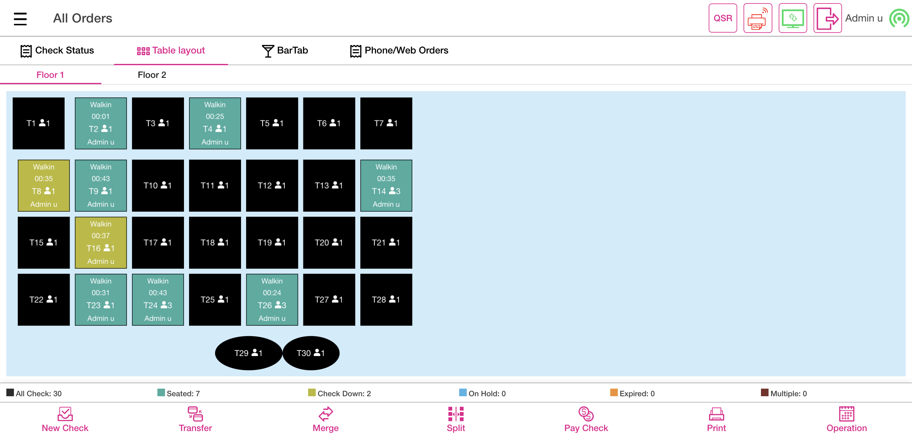

-
Ask Seat Number Feature
7:09:50 PM / 00:08:26:470 Fail
Ask Seat Number Feature
05.03.2024 7:09:50 PM 05.03.2024 7:18:16 PM 00:08:26:470 · #test-id=1FailVerify the "Ask Seat count in Table Layout" new toggle in Pos settings under DINE IN is availableGiven I'm logged inAnd I closed the order type windowAnd I click the Settings buttonAnd I click the POS settings from ToggleAnd I verify that ask seat count toggle is availableAnd I click power button in operationcom.qa.stepdef.Hooks.quit(io.cucumber.java.Scenario)screenshot FailVerify the transferGiven I'm logged inAnd I closed the order type windowAnd I click AllAnd I click Table Layout tabAnd I select the random table from the table layoutAnd I select Menu of Basic validation for QSR as "Menu"And I click Finish Order buttonAnd I click Table Layout tabAnd User select the Transfer buttonAnd User verify Transfer to Server, Transfer to Table and Transfer Item are displayedAnd User select the Transfer Item OptionWhen I select check for transferredAnd Select the required menu item from the Menu Item TableWhen I select check for transferred1And Click the Done buttonAnd Verify the Successful message of Transfer Item OneAnd I click Done button on the PopupWhen I click transferred table after done transfer processThen Verify the Transferred menu item is available or not in the receiving tableStep skippedAnd I click Finish Order buttonStep skippedAnd I click power button in the All Orders screenStep skippedcom.qa.stepdef.Hooks.quit(io.cucumber.java.Scenario)screenshot
FailVerify the transferGiven I'm logged inAnd I closed the order type windowAnd I click AllAnd I click Table Layout tabAnd I select the random table from the table layoutAnd I select Menu of Basic validation for QSR as "Menu"And I click Finish Order buttonAnd I click Table Layout tabAnd User select the Transfer buttonAnd User verify Transfer to Server, Transfer to Table and Transfer Item are displayedAnd User select the Transfer Item OptionWhen I select check for transferredAnd Select the required menu item from the Menu Item TableWhen I select check for transferred1And Click the Done buttonAnd Verify the Successful message of Transfer Item OneAnd I click Done button on the PopupWhen I click transferred table after done transfer processThen Verify the Transferred menu item is available or not in the receiving tableStep skippedAnd I click Finish Order buttonStep skippedAnd I click power button in the All Orders screenStep skippedcom.qa.stepdef.Hooks.quit(io.cucumber.java.Scenario)screenshot
PassVerify the ask Customer name toggle enabled status and ask seat count enabled statusGiven I'm logged inAnd I closed the order type windowAnd I click the Settings buttonAnd I click the POS settings from ToggleAnd I verify that ask seat count toggle is enabledAnd I verify that ask customer for Dine In is enabledAnd I click the Toggle Icon buttonAnd I click POS Icon from ToggleAnd I closed the order type windowAnd I click AllAnd I click Table Layout tabAnd I select random table on the table layoutWhen I should verify the ask seat number on the table layoutAnd I select the number of seats as "1"And I tap Continue to finish selecting the number of seatsAnd User click cancel button for customer name popupAnd I click Add Customer ButtonThen I should see the add customer screen in the windowAnd I Click on the Byname OptionAnd Enter some name and click on Add Customer buttonThen I should see the customer profile windowAnd I select searchAnd I enter an existing customer's name "Auto ragav"And I select the customerWhen I click the Save buttonThen I Should get back to the Order ScreenThen I should see customer as "Auto r" added on order screenAnd I get check numberAnd I select category as "FOOD"And I select menu item as "Chicken Schnitzel"And I click Payment button in the Order Management ScreenAnd I click cash button from the payment method popupAnd I click Submit button on the Payment WindowAnd I click Table Layout tabAnd I click power button in the All Orders screenPassVerify the DeliveryGiven I'm logged inAnd I closed the order type windowAnd I click service type button in order screenAnd I select the DELIVERY order typeThen I should see the add customer screen in the windowAnd I Click on the Byname OptionAnd Enter some name and click on Add Customer buttonThen I should see the customer profile windowAnd I select searchAnd I enter an existing customer's name "Auto test"And I select the customerWhen I click the Save buttonThen I Should get back to the Order ScreenAnd I should see service type as "DELIVERY"And I get check numberAnd I select category as "FOOD"And I select menu item as "Chicken Schnitzel"And I click Payment button in the Order Management ScreenAnd I click cash button from the payment method popupAnd I click Submit button on the Payment WindowAnd I click Done button on the PopupAnd I click Exit to return to Order Management ScreenAnd I click Finish Order buttonAnd I click phone order tabAnd I click the Closed check in new tab windowAnd I click active driver as "Auto D"Then I should see driver is offline popupAnd I click Yes button on driver is offline popupAnd I click active driver as "Auto D" in the Phone Order ScreenAnd I click departure buttonAnd I click out tab in phone order screenAnd I click the Closed check in out tabAnd I click Arrival button in phone order screenAnd I click Complete tabAnd I click out tab in phone order screenAnd I click Complete tabThen I should see closed check in complete tabAnd I click Check Stats tabAnd I click Closed tab on the Check statsAnd I should see closed check in closed check tabAnd I click power button in the All Orders screenPassVerify the phone deliveryGiven I'm logged inAnd I closed the order type windowAnd I click service type button in order screenAnd I select order type as "PHONE DELIVERY"Then I should see the add customer screen in the windowAnd I Click on the Byname OptionAnd Enter some name and click on Add Customer buttonThen I should see the customer profile windowAnd I select searchAnd I enter an existing customer's name "Auto test"And I select the customerWhen I click the Save buttonThen I Should get back to the Order ScreenAnd I should see service type as "DELIVERY"And I get check numberAnd I select category as "FOOD"And I select menu item as "Chicken Schnitzel"And I click Payment button in the Order Management ScreenAnd I click cash button from the payment method popupAnd I click Submit button on the Payment WindowAnd I click Done button on the PopupAnd I click Exit to return to Order Management ScreenAnd I click Finish Order buttonAnd I click phone order tabAnd I click the Closed check in new tab windowAnd I click active driver as "Auto D"Then I should see driver is offline popupAnd I click Yes button on driver is offline popupAnd I click active driver as "Auto D" in the Phone Order ScreenAnd I click departure buttonAnd I click out tab in phone order screenAnd I click the Closed check in out tabAnd I click Arrival button in phone order screenAnd I click Complete tabAnd I click out tab in phone order screenAnd I click Complete tabThen I should see closed check in complete tabAnd I click Check Stats tabAnd I click Closed tab on the Check statsAnd I should see closed check in closed check tabAnd I click power button in the All Orders screen
-
org.openqa.selenium.NoSuchElementException
1 tests
org.openqa.selenium.NoSuchElementException
1 failedStatus Timestamp TestName Fail 19:13:24 PM When I click transferred table after done transfer process Ask Seat Number Feature.Verify the transfer.When I click transferred table after done transfer process -
org.openqa.selenium.TimeoutException
1 tests
org.openqa.selenium.TimeoutException
1 failedStatus Timestamp TestName Fail 19:11:04 PM And I click power button in operation Ask Seat Number Feature.Verify the "Ask Seat count in Table Layout" new toggle in Pos settings under DINE IN is available.And I click power button in operation
-
@ash
5 tests
@ash
3 passed 2 failedStatus Timestamp TestName Fail 19:09:50 PM Verify the "Ask Seat count in Table Layout" new toggle in Pos settings under DINE IN is available Ask Seat Number Feature.Verify the "Ask Seat count in Table Layout" new toggle in Pos settings under DINE IN is availableFail 19:11:19 PM Verify the transfer Ask Seat Number Feature.Verify the transferPass 19:13:31 PM Verify the ask Customer name toggle enabled status and ask seat count enabled status Ask Seat Number Feature.Verify the ask Customer name toggle enabled status and ask seat count enabled statusPass 19:15:47 PM Verify the Delivery Ask Seat Number Feature.Verify the DeliveryPass 19:17:01 PM Verify the phone delivery Ask Seat Number Feature.Verify the phone delivery -
@mn
5 tests
@mn
3 passed 2 failedStatus Timestamp TestName Fail 19:09:50 PM Verify the "Ask Seat count in Table Layout" new toggle in Pos settings under DINE IN is available Ask Seat Number Feature.Verify the "Ask Seat count in Table Layout" new toggle in Pos settings under DINE IN is availableFail 19:11:19 PM Verify the transfer Ask Seat Number Feature.Verify the transferPass 19:13:31 PM Verify the ask Customer name toggle enabled status and ask seat count enabled status Ask Seat Number Feature.Verify the ask Customer name toggle enabled status and ask seat count enabled statusPass 19:15:47 PM Verify the Delivery Ask Seat Number Feature.Verify the DeliveryPass 19:17:01 PM Verify the phone delivery Ask Seat Number Feature.Verify the phone delivery
Started
May 3, 2024 07:09:47 PM
Ended
May 3, 2024 07:18:16 PM
Features Passed
0
Features Failed
1
Features
Scenarios
Steps
Timeline
Tags
| Name | Passed | Failed | Skipped | Others | Passed % |
|---|---|---|---|---|---|
| @ash | 3 | 2 | 0 | 0 | 60% |
| @mn | 3 | 2 | 0 | 0 | 60% |